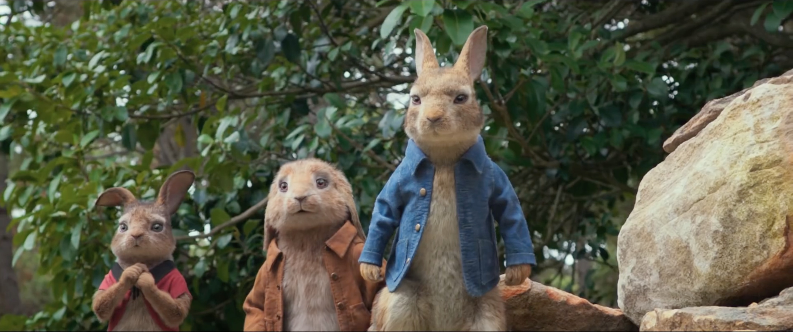

[Review] Peter Rabbit: Cuộc Chiến Hài Hước Giữa Người Và Thỏ
Hài hước suốt 95 phút, dù là trẻ nhỏ hay người lớn cũng sẽ phải bật cười trước những tình huống vô cùng đáng yêu của Peter Rabbit.
Một truyện cổ được cải biên, thổi vào hơi thở hiện đại đầy mới lạ và vô cùng hấp dẫn, Peter Rabbit sẽ tặng bạn một tấm vé trở về tuổi thơ, đến với cuộc sống của những sinh vật biết nói đáng yêu ở miền quê Anh quốc.
Nhân vật chính là chú thỏ Peter với đôi mắt tinh tường, tính tình tinh quái, là vị “lãnh đạo” tinh anh trong gia đình nhà thỏ. Peter cùng bố mẹ và các em từng có cuộc sống yên bình trước khi lão McGregor đến, dựng nên tòa nhà rộng lớn cùng tường rào cao ngất, đẩy những sinh vật bé nhỏ “chủ nhân” vùng đất này rơi vào cảnh khó khăn. Khi lương thực dần ít đi, bố Peter mạo hiểm lẻn vào trang viên để rồi… trở thành bữa ăn ngon lành của lão già độc ác. Chú thỏ mặc áo khoác xanh của bố lớn lên, mang trong lòng nỗi căm hận sâu sắc. Tất cả những gì Peter muốn là đánh bại lão McGregor, giành lại khu đất “vốn thuộc về mình”.
Bước lên màn ảnh rộng, những nhân vật Peter Rabbit được xây dựng, phát triển đa dạng, muôn màu muôn vẻ hơn so với trang sách.
Từ 2D sang 3D, chú thỏ Peter trên bộ phim mới sở hữu cá tính mạnh vô cùng ấn tượng. Dù rằng, đôi lúc, chính cách hành xử này khiến Peter khó được lòng đa số khán giả. Peter làm đủ mọi cách để đối đầu với lão McGregor, kể cả việc mạo hiểm tính mạng của mình lẫn các em. Chú thỏ cùng bầy đàn đã trưởng thành vốn có thể kiếm ăn một cách bình yên. Thế nhưng, Peter lại chọn cách chạy vào khu vườn rộng lớn đủ loại bẫy rập, nơi cán cuốc bồ cào sẽ bổ xuống bất cứ lúc nào để ăn trộm. Khi lão McGregor chết, Thomas McGregor – đứa cháu họ hàng xa tới vùng quê này thừa kế trang viên. Peter tiếp tục khiêu chiến McGregor trẻ hơn, dù gã thanh niên mới tới này chưa gây hại gì cho mình hay các em.

McGregor bên kia chiến tuyến cũng gặp vấn đề về tính cách như chú thỏ. Gã quy củ và nguyên tắc đến khó tin. Tuy nhiên, gã hoàn toàn không phải người xấu. Sống ở London phồn hoa đô hội, McGregor trẻ chán ghét vùng quê, chỉ muốn bán tống bán tháo căn nhà. Vậy mà McGregor chẳng có ý định đối đầu với bọn thỏ tinh ranh cũng chút nào lại hết lần này đến lần khác bị Peter khiêu khích, buộc phải dùng đến sức mạnh hủy diệt của con người để phản kháng.
Đứng giữa hai kẻ khó chiều này là Bea – nàng họa sĩ dịu dàng xinh đẹp sống gần đó. Hết lòng chăm sóc lũ thỏ, Peter coi cô như người mẹ thứ hai. Còn McGregor trẻ thì bị cuốn hút bởi sự ngọt ngào, hài hước ở cô hàng xóm. Bea khiến mâu thuẫn giữa McGregor - Peter lên đến đỉnh điểm nhưng cũng là nguyên nhân khiến cả hai nhìn lại bản thân và nhượng bộ đối phương.
Là một bộ phim về thiên nhiên hoang dã nên thật dễ dàng để nhận ra rằng những mảng màu xanh chiếm phần lớn trong “bức tranh” Peter Rabbit, đem lại cảm giác mát mắt, nhẹ nhàng cho khán giả trong rạp chiếu phim. Màu phim đẹp, sáng. Ngôi nhà của McGregor hay hang thỏ đều được đầu tư dàn dựng chỉn chu. Kinh phí đầu tư 50 triệu giúp phần kỹ xảo đẹp và mượt mà khó thể chê vào đâu được. Khâu biên tập, dựng phim cũng thành công kết hợp nhuần nhuyễn những cảnh tương tác giữa con người - sinh vật chiếm hầu hết thời lượng phim.
Mạch phim là sự kết hợp hoàn hảo giữa các tình tiết hài hước gay cấn đan xen. Dàn dựng cắt cảnh tốt, chuyển đổi qua lại giữa không gian sống của con người và loài thỏ hết sức mượt mà. Những bài học Peter Rabbit truyền tải vừa nhẹ nhàng vừa thâm thúy.
Gia đình thỏ là ngọn nguồn ấm áp, luôn yêu thương, bảo vệ, che chở và tha thứ cho “đứa con hoang đàn” Peter.
Khác với một Peter nhanh nhẹn, cậu em họ Benjamin là chú thỏ béo ú. Luôn lẽo đẽo theo Peter ở khắp nơi, thỏ béo thừa hiểu mình sẽ gặp nguy hiểm thế nào. Thế nhưng, việc chạy theo đồng hành với Peter dường như đã trở thành phản xạ không điều kiện của Benjamin. Ba cô em gái Flopsy, Mopsy và Cotton-Tail tuy hay cãi nhau nhưng làm việc rất đoàn kết, luôn yêu thương anh trai hết lòng. Dù tình huống nguy hiểm nào, chúng vẫn luôn ở bên nhau.
Đề cao tình cảm gia đình nhưng Peter Rabbit chẳng hề đặt nặng tính giáo điều. Nàng Bea cùng McGregor trẻ - cô gái tự do tự tại đại diện cho vùng nông thôn yên bình và gã trai quen lề thói quy củ mang hình ảnh London cổ kính không thiếu những thước phim đẹp lãng mạn đến rung động con tim.
Peter Rabbit sở hữu một dàn sao khủng. Lồng tiếng cho chú thỏ Peter chính là cây hài Anh quốc nổi tiếng toàn cầu James Corden. Ba cô em gái đáng yêu của cậu chàng cũng do loạt sao nữ xinh đẹp Margot Robbie, Elizabeth Debicki và Daisy Ridley thể hiện. Nam diễn viên thực lực người Ireland Domhnall Gleeson vào vai gã McGregor trẻ tuổi. Các fan cuồng Harry Potter sẽ không khó để nhận ra đây là chàng Bill Weasley ngày xưa. Nàng Bea ngọt ngào do cô đào người Úc Rose Bryne thủ vai. Đặc biệt, ngôi sao kỳ cựu Jurassic Park – Sam Neil trong lốt hóa trang béo ú râu ria khiến khó ai nhận ra ông đảm nhận vai lão McGregor khó ưa.
Bảo vệ môi trường không phải là chủ đề mới trên màn ảnh rộng. Tuy nhiên, để truyền tải thông điệp này một cách nhẹ nhàng, vui vẻ mà vẫn để lại ấn tượng sâu sắc chẳng hề dễ dàng, có lẽ Peter Rabbit là một trong số ít phim hay làm được điều đó.